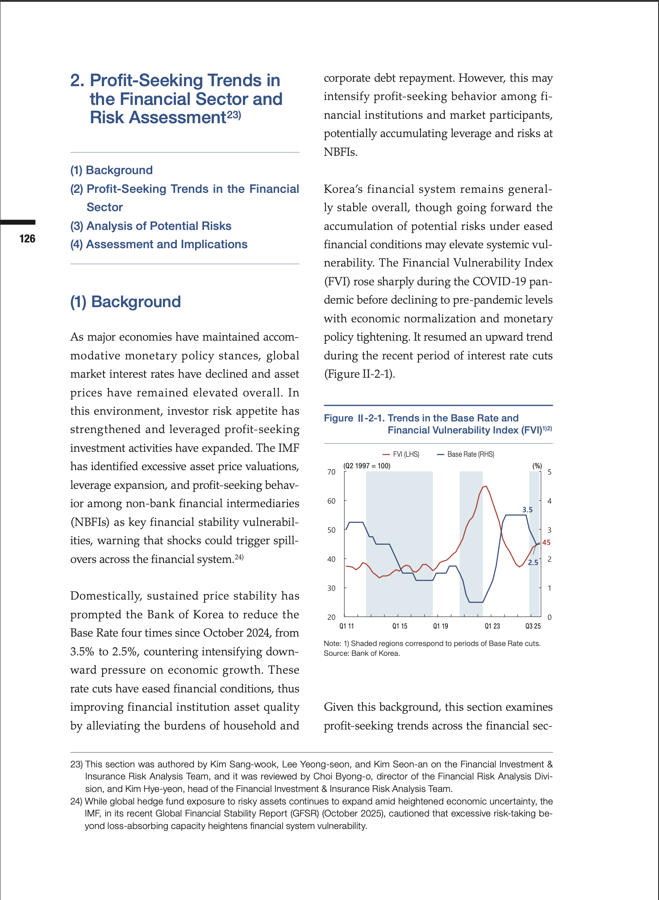

AI 학술 검색 · 네비게이션 에이전트 · 연구물 홍보 — 3대 솔루션으로 실현하는 학술 서비스 혁신
AI 기반 시맨틱 검색으로 키워드가 아닌 맥락을 이해하여 가장 관련성 높은 학술 자료를 추천합니다.
이용자의 질문에 AI가 즉시 응답하는 FAQ 채팅봇. 학술정보관 이용 안내를 24시간 제공합니다.

연구 논문을 AI가 분석하여 숏폼 영상으로 자동 변환합니다.
AI가 연구 논문을 분석하여 자동 생성한 롱폼 홍보 영상입니다.
연구자 핑거프린트(fingerprint)를 통해 학교 소속 연구자의 연구 현황을 추적·매핑하고, 주저자·공저자를 관리합니다.
대시보드 바로가기 →